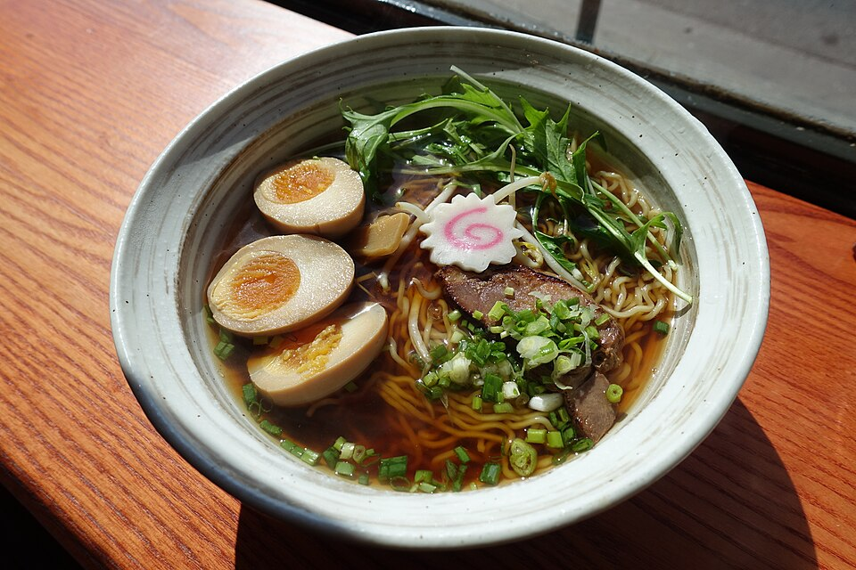

Zero Artificial Shortcuts
We never touch commercial broth concentrates or dehydrated flavor powders. Our deep, complex stocks are simmered from scratch with real marrow bones, kelp, and whole vegetables every single day.
Named after Tokyo’s vibrant entertainment district renowned for bustling late-night ramen counters, Roppongi Ramen Bar was born from a desire to bring genuine Japanese noodle craftsmanship and Seoul-style fried chicken to Southeast Charlotte. We set out to create a cozy neighborhood refuge where every guest can experience real, unhurried Asian comfort food.

Dedication to craft, warmth of spirit, and respect for tradition.
We never touch commercial broth concentrates or dehydrated flavor powders. Our deep, complex stocks are simmered from scratch with real marrow bones, kelp, and whole vegetables every single day.
Whether sitting alone at our noodle bar watching our chefs ladle steaming broth or gathering around a dining booth with friends, our dining room provides warm, relaxed izakaya comfort.
Located on the Monroe Road corridor, we are proud to serve the Southeast Charlotte, Matthews, and MoRA neighborhoods with affordable, soul-filling dining seven days a week.